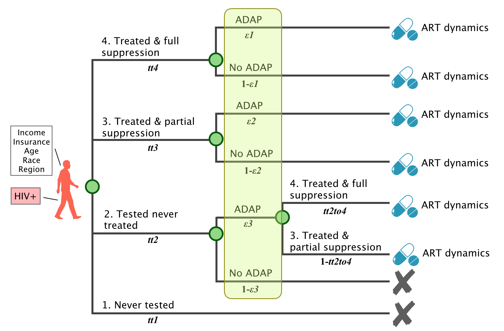

People Living With HIV/AIDS
ADAP and care continuum
Upon entering the model, each individual is assigned to one of the care trajectories, based on their individual attributes (e.g. income, insurance, etc.)
The four trajectories are:
- T1: Never test
- T2: Test and never treat
- T3: Treat with partial suppression
- T4: Treat with full suppression
Within each of these trajectories, there can be variation in care over time. For example, someone in T4 may stop taking ART.
ADAP affects the trajectories in the following ways:
- Without ADAP, only individuals in T3 and T4 can engage in care and enter into the ART treatment dynamics.
- For individuals on T3/T4, ADAP modifies the ART dynamics. This can lead to a longer duration of ART treatment and fewer gaps in ART treatment.
- With ADAP, individuals who are on T2 may be able to obtain ART treatment and engage in care.
- In addition, individual attributes influence the probability that a person diagnosed with HIV enrolls in ADAP.
In addition to being assigned a trajectory upon model entry, individuals are also assigned "ADAP" or "no ADAP", Only these people may enter the ADAP program.
The trajectory and ADAP/no ADAP assignment is illustrated below:
Parameters
note: VS = viral suppression
| Label | Parameter | Data Source | Stratification | Question |
|---|---|---|---|---|
| Treatment trajectories | ||||
| tt4 | Percentage of PLWH who consistently achieve full VS | MMP, eHARS | Race, income, insurance, region | ? |
| tt3 | Percentage of PLWH who engage in care but do not consistently achieve full VS | MMP, eHARS | Race, income, insurance, region | ? |
| tt1 | Percentage of PLWH who never test | Washington HIV Epi Reports | Race, income, insurance, region | How can we get the stratified data? |
| tt2 | Percentage of PLWH that get a dx but never engage in care | Washington HIV Epi Reports | Race, income, insurance, region | ? |
| ADAP parameters | ||||
| ε1 | Percentage of people on T4 who are in ADAP | Claims data linked with eHARS | Race, income, insurance, region | ? |
| ε2 | Percentage of people on T3 who are in ADAP | Claims data linked with eHARS | Race, income, insurance, region | ? |
| ε3 | Percentage of people on T2 who would enter care if on ADAP (?) | ? | Race, income, insurance, region | ? |
| tt2to4 | Percentage of people on ADAP+T2 who achieve full VS | ? | Race, income, insurance, region | ? |
ART and ADAP dynamics
, where refers to the test/treat trajectory to which an indiviudal was assigned.
- Individuals could change ADAP status because of changes in income and insurance, or because of failing recertification.
- ADAP status migth increase ART initiation and reinitiation and decrease ART stoppage.
Parameters
| Label | Parameter | Data Source | Stratification | Question |
|---|---|---|---|---|
| ADAP dynamics | ||||
| Ο | Weekly probability of enrolling in ADAP | Calculated from average time to ADAP enrollment from diagnosis | Race, income, region, age | None |
| Ω | Weekly probability of disenrolling from ADAP | Calculated from average duration of ADAP enrollment | Race, region, age | None |
| ADAP inactive | ||||
| μ, μ' | Weekly probability of ART initiation after diagnosis (tx naive) | Previous publications, eHARS, WADOH claims data (?) | Treatment trajectory, ADAP status, race, region | None |
| τ, τ | Weekly probability of ART discontinuation | Previous publications, eHARS, WADOH claims data (?) | Treatment trajectory, ADAP status, race, region | None |
| ν, ν' | Weekly probability of reinitiating ART after discontinuation | Previous publications, eHARS, WADOH claims data (?) | Treatment trajectory, ADAP status, race, region | None |
| σ, σ' | Weekly probability of discontinuing ART after reinitiation | Previous publications, eHARS, WADOH claims data (?) | Treatment trajectory, ADAP status, race, region | None |
Questions
- Does everyone immediately initiate ART after enrollment?
- Is engaging in care a requirement for recertification?
- Are there records of diagnosed date prior to enrollment?
ADAP cost
- Client costs
- Insurance premium (if insurance is ADAP-sponsored)
- Copay, coinsurance, deductible for:
- ART
- HIV-related medical services
- Other medical services
- Assessment cost
- Overhead
Questions
- On average, what is the ratio of enrollments to applications for ADAP in a year?